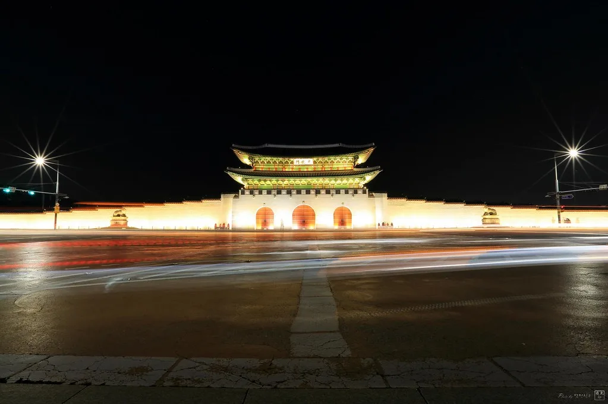

이재명 대통령, 광복 81주년 경축식 참석…"내일이 더 빛나는, 대체불가 대한민국"
이재명 대통령과 김혜경 여사가 15일 오전 서울에서 열린 제81주년 광복절 경축식에 참석했다. 이날 행사에는 애국지사와 독립유공자 유족, 정부 주요 인사, 여야 정당·종교계 대표, 주한 외교단, 시민과 학생 등 3000여 명이 자리했다. 올해 경축식은 '내일이 더 빛나는, 대체불가 대한민국'을 주제로 열렸으며, 개식 선언과 국민의례, 광복회장 기념사, 주제영상 상영, 독립유공자 포상, 대통령 경축사, 경축 공연, 광복절 노래 제창, 만세삼창 순으로 진행됐다.
이 대통령은 경축사를 통해 남북 간 평화 공존의 방향과 미래지향적 한일 관계를 위한 청사진을 제시할 것으로 전해졌다. 여권 관계자에 따르면 지난 1년간 되찾은 국정 안정을 국민의 더 나은 삶과 국가 경쟁력 도약의 동력으로 전환해야 한다는 메시지가 담길 예정이며, 특히 인공지능(AI) 시대에 걸맞은 국가 경쟁력을 키우기 위한 미래 청사진에 방점이 찍힐 것으로 알려졌다. '내일이 더 빛나는, 대체불가 대한민국'이라는 이번 경축식 주제 역시 지난 1년의 국정 성과를 발판 삼아 다음 단계로 나아가겠다는 취지를 담고 있다는 게 여권의 설명이다.

이번 광복절은 이 대통령 취임 이후 두 번째로 맞는 광복절이다. 지난해 첫 광복절 경축사에서 12·3 불법계엄 사태를 극복한 과정을 '빛의 혁명'으로 규정하고 이를 3·1운동으로부터 이어진 시민 저항의 연장선으로 자리매김했던 만큼, 올해는 그 연장선에서 국정 운영의 성과와 향후 국가 발전 전략을 함께 짚는 자리가 될 것이라는 관측이 나온다. 정부는 앞서 반도체·데이터센터·피지컬 AI를 축으로 한 메가프로젝트와 소형모듈원자로(SMR)·양자·우주항공 등 7대 미래 성장동력 육성 계획을 발표한 바 있어, 이날 경축사에서도 관련 국정 기조가 재확인될 가능성이 거론된다.
한일 관계와 관련해서는 정상회담을 일주일가량 앞둔 시점이라는 점에서 과거사 문제보다 미래지향적 협력에 무게가 실릴 것이라는 전망이 우세하다. 대북 메시지의 경우 군사적 긴장 완화와 신뢰 회복에 초점을 맞춘 언급이 나올 것으로 예상되며, 정부가 그간 강조해 온 단계적 신뢰 구축 기조가 이어질지 주목된다. 외교가에서는 광복절 경축사가 대통령의 대외 정책 기조를 공개적으로 밝히는 자리인 만큼, 임박한 한일 정상회담의 의제와 분위기를 가늠할 수 있는 신호로 해석될 가능성이 크다는 분석도 나온다.

이날 경축식에는 독립유공자와 그 유족에 대한 포상도 함께 진행됐다. 정부는 매년 광복절을 맞아 미처 발굴되지 못했던 독립운동 공적을 재조명하고 후손들에게 서훈을 전달해 왔으며, 올해도 관련 절차가 행사 순서에 포함됐다. 행사장에는 애국지사 유족을 비롯해 각계 대표와 시민, 학생 등 3000여 명이 참석해 자리를 가득 채웠고, 경축식 이후에는 경축 공연과 함께 참석자 전원이 참여하는 만세삼창으로 행사가 마무리됐다.
정치권에서는 이번 경축사가 취임 2년차를 맞은 이 대통령의 국정 운영 방향을 가늠할 수 있는 계기가 될 것으로 보고 있다. 여당은 국정 안정과 미래 성장동력 확보라는 두 축을 중심으로 한 메시지가 나올 것으로 기대하는 반면, 야당은 구체적 정책 성과와 재원 조달 방안이 뒷받침되는지를 살펴보겠다는 입장이다. 정부는 이날 경축사에서 제시된 방향에 맞춰 후속 정책 발표를 이어갈 예정이라고 밝혔다.